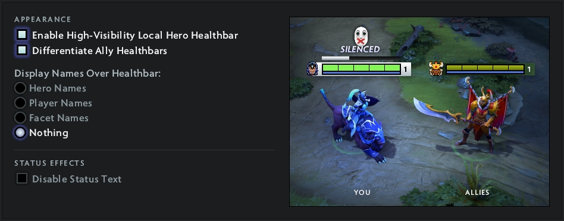

Audio
A couple of years ago I disabled
It's a peaceful life.

I disable

I used
I like this option a lot, but it's a bit distracting and I no longer need it.
I see no reason to use anything else but this.

Why would I need everyone's nicknames cluttering my screen?
Especially considering the kind of nicknames Dota 2 players have.
Dota 2 nicknames is an art form, but I will appreciate it in a lobby.
A couple of years ago I disabled
It's a peaceful life.
I disable
I used
I like this option a lot, but it's a bit distracting and I no longer need it.